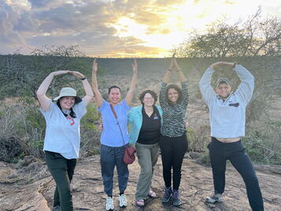

The Graduate School at The Ohio State University has announced the 2025-2026 Presidential Fellowship recipients in November, naming Jenna Kline as one of this year’s distinguished honorees. Notably, Jenna makes history as the first-ever Imageomics PhD candidate to receive this prestigious award.
The Presidential Fellowship is the highest honor bestowed by the Graduate School, recognizing the outstanding scholarly accomplishments and potential of graduate students as they enter the final phase of their dissertation research.
Jenna’s groundbreaking research develops autonomous, distributed AI-augmented sensing systems that integrate edge computing, computer vision, and robotics. By pushing decision-making to the edge, her work enables systems to autonomously adapt to real-time environmental changes—such as animal movements or weather patterns—without constant human intervention. Her goal is to revolutionize ecological research and conservation by providing scalable, real-time data that significantly augments expert decision-making.
This fellowship will allow Jenna to focus exclusively on completing her dissertation, further cementing her role as a leader in the emerging field of Imageomics. Please join us in congratulating Jenna on this historic achievement and her dedication to improving our understanding of the natural world through technological innovation.